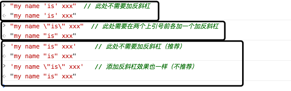

JavaScript 文字列
JavaScript の文字列は、テキストの保存と処理に使用されます。
JavaScript 文字列
文字列は、"John Doe" のような一連の文字を格納できます。
文字列は、引用符で囲まれた任意の文字です。一重引用符または二重引用符を使用できます：
例
var carname = 'Volvo XC60';
インデックス位置を使用して、文字列内の各文字にアクセスできます：
例
文字列のインデックスは 0 から始まります。つまり、最初の文字のインデックス値は[0]、2番目の文字は[1]、以下同様です。
例
let letter = name[2];
document.getElementById("demo").innerHTML = letter;
試してみる »
文字列内で引用符を使用できます。文字列内の引用符は、文字列を囲む引用符と同じにしないでください：
例
var answer = "He is called 'Johnny'";
var answer = 'He is called "Johnny"';
エスケープ文字を文字列に追加して引用符を使用することもできます：
文字列の長さ
組み込みプロパティを使用してlength文字列の長さを計算できます：
特殊文字
JavaScript では、文字列は一重引用符または二重引用符で記述します。
このため、次の例は JavaScript で解析できません：
文字列 "We are the so-called " が切り詰められます。
上記の問題を解決するにはどうすればよいでしょうか？ 次のように、バックスラッシュ (\) を使用して "Vikings" 文字列内の二重引用符をエスケープできます：
バックスラッシュはエスケープ文字です。エスケープ文字は、特殊文字を文字列の文字に変換します：
エスケープ文字 (\) は、アポストロフィ、改行、引用符などのその他の特殊文字をエスケープするために使用できます。
次の表に、文字列内でエスケープ文字を使用してエスケープできる特殊文字を示します：
| コード | 出力 |
|---|---|
| \' | 一重引用符 |
| \" | 二重引用符 |
| \\ | バックスラッシュ |
| \n | 改行 |
| \r | 復帰 |
| \t | タブ（水平タブ） |
| \b | バックスペース |
| \f | フォームフィード |
文字列はオブジェクトにできる
通常、JavaScript の文字列はプリミティブ値であり、文字を使用して作成できます：var firstName = "John"
ただし、new キーワードを使用して文字列をオブジェクトとして定義することもできます：var firstName = new String("John")
 |
String オブジェクトを作成しないでください。実行速度が遅くなり、他の副作用が生じる可能性があります： |
|---|
例
var y = new String("John");
(x === y) // x は文字列、y はオブジェクトのため、結果は false になります
試してみる »
=== は完全一致を意味し、データ型と値の両方が等しい必要があります。
文字列のプロパティとメソッド
プリミティブ値の文字列（"John" など）には、プロパティとメソッドがありません（オブジェクトではないため）。
プリミティブ値は JavaScript のプロパティとメソッドを使用できます。JavaScript はメソッドとプロパティを実行するときに、プリミティブ値をオブジェクトとして扱うことができるからです。
文字列メソッドについては、次の章で説明します。
文字列のプロパティ
| プロパティ | 説明 |
|---|---|
| constructor | 文字列プロパティを生成した関数を返す |
| length | 文字列の長さを返す |
| prototype | オブジェクトにプロパティとメソッドを追加できます |
文字列のメソッド
その他のメソッドの例については、次を参照してください：JavaScript String オブジェクト。
| メソッド | 説明 |
|---|---|
| charAt() | 指定されたインデックス位置の文字を返す |
| charCodeAt() | 指定されたインデックス位置の文字の Unicode 値を返す |
| concat() | 2 つ以上の文字列を連結し、連結後の文字列を返す |
| fromCharCode() | Unicode を文字列に変換する |
| indexOf() | 文字列内で指定された文字が最初に出現する位置を返す |
| lastIndexOf() | 文字列内で指定された文字が最後に出現する位置を返す |
| localeCompare() | ローカル固有の順序で 2 つの文字列を比較する |
| match() | 1 つ以上の正規表現の一致を見つける |
| replace() | 正規表現に一致する部分文字列を置換する |
| search() | 正規表現に一致する値を検索する |
| slice() | 文字列の一部を抽出し、抽出された部分を新しい文字列で返す |
| split() | 文字列を部分文字列の配列に分割する |
| substr() | 開始インデックスから文字列内の指定された文字数を抽出する |
| substring() | 文字列内の 2 つの指定されたインデックス番号の間の文字を抽出する |
| toLocaleLowerCase() | ホストの言語環境に従って文字列を小文字に変換します。トルコ語など一部の言語のみが、ロケール固有の大文字小文字のマッピングを持ちます。 |
| toLocaleUpperCase() | ホストの言語環境に従って文字列を大文字に変換します。トルコ語など一部の言語のみが、ロケール固有の大文字小文字のマッピングを持ちます。 |
| toLowerCase() | 文字列を小文字に変換する |
| toString() | 文字列オブジェクトの値を返す |
| toUpperCase() | 文字列を大文字に変換する |
| trim() | 文字列の先頭と末尾の空白を削除する |
| valueOf() | 文字列オブジェクトのプリミティブ値を返す |
小泽码
133***69596@qq.com
参考リンク
JavaScript == と === の違い
1. string、number などの基本型では、== と === に違いがあります。
2. Array、Object などの高度な型では、== と === に違いはありません。
「ポインタアドレス」を比較します。
3. 基本型と高度な型では、== と === に違いがあります。
4. != は == の否定演算であり、!== は === の否定演算です。
小泽码
133***69596@qq.com
参考リンク
H
132***3068@qq.com
二重引用符" "の中で一重引用符を使う' 'バックスラッシュを追加する必要はありません。例：
二重引用符" "の中で二重引用符を使う" "バックスラッシュを追加する必要があります。例：
一重引用符' 'の中で二重引用符を使う" "バックスラッシュを追加する必要はありません。もちろん追加しても構いません。例：
テスト結果は次の図のとおりです：

H
132***3068@qq.com
小宅
zcz***chao@163.com
var x = "JohnJohn"; // x 是字符串 y = x.charAt(2); // h y = x.charCodeAt(2); // 104 y = x.concat(y, y); // JohnJohn104104, x+y+y y = x.indexOf('h'); // 2, 索引从0开始 y = x.lastIndexOf('h'); // 6 y = x.slice(); y = x.split('o'); //J,hnJ,hn y = x.substr(2); // hnJohn y = x.substring(2,4) // hn，[2,3] y = x.toLocaleLowerCase(); // johnjohn,小写 y = x.toLocaleUpperCase(); // JOHNJOHN,大写 y = x.toString(); // 转成Stirng y = x.toUpperCase(); // JOHNJOHN,大写 y = x.trim(); // JohnJohn,去除两端的空格 y = x.valueOf(); // 返回某个字符串对象的原始值小宅
zcz***chao@163.com
低调的小白
125***9498@qq.com
上の方（前のコメント）に補足します：
slice()メソッドは文字列の一部を抽出し、抽出された部分を新しい文字列として返します。
構文：
例：
低调的小白
125***9498@qq.com